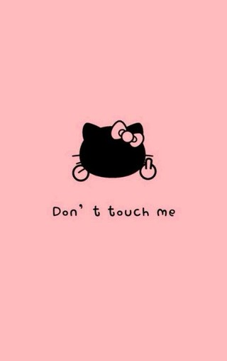
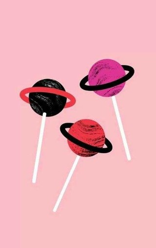

项目案例
-

微禹州
禹州，也是我的家乡。是一个吃喝玩乐的门户网站。自己无意间看到这个网站，就拿来练手了毕竟自己家乡的东西，下面的图片做了改动，用hover之后缩放图片以及背景渐变色的改动，自己也喜欢。
在线演示 -

美丽说
美丽说是白领女性时尚消费品牌,为超过1亿注册用户提供导购信息。建立300万全球女性时尚品牌商品库,超过1000家全球品牌达成官方合作导购体验。
在线演示 -

移动端-京东
移动端适配，为了满足不同屏幕的大小，设置meta viewport中的scale保证页面大小与设计稿一致，使用百分比。
在线演示 -
移动端-苏宁
移动端适配，为了满足不同屏幕的大小，设置meta viewport中的scale保证页面大小与设计稿一致，使用rem为单位。
在线演示 -

YOKA
YOKA时尚网是服务于高收入群体的时尚生活门户,时尚网站.专注提供时尚奢侈品资讯报道,品牌动态,购物交流等服务;同时也是时尚人士,明星生活交流的主题社区。
在线演示 -
唯品会
【今日特卖大牌】唯品会，一家专门做特卖的网站！都是傲娇的品牌，只卖呆萌的价格！商品囊括了时尚女装、童装、美妆、美鞋、男装、居家、母婴、配饰、皮具、香水等。每天10点上新，精选100+个品牌授权特卖，100%正品保证，限量抢购，支持货到付款，7天无条件退货！
在线演示 -
H5钟表
大家都知道钟表，都有时针，分针，秒针，用for循环动态创建60个li。秒针每秒走6deg，分针每分钟走6deg，时针每小时走30deg，获取时间戳，用transform:rotate（）关联对象。
在线演示 -
随机动画
动画用animation属性配合@keyframes来使用。类似于Flash中的关键帧。以0% ~ 100% 来过渡。用百分比去实现响应式，这样觉得简单点。用JS实现，随机数以及图片自适应居中。
在线演示 -
全屏滚动
利用鼠标滚轮jquery.mousewheel.min.js就可以了。思路是：1、要得到当前页面的下标。2、判断鼠标滚轮式向上滑动还是向下滑动，如果向上滑动，下标减一，反之就是加一。3、关联按钮和滚动的下标来达到圆点和页面的同步，利用简单好用的css3的过渡来完成动画。
在线演示 -
九宫格特效
jQuery实现九宫格图片拖拽排序效果代码，完美兼容所有浏览器，通过遍历arr数组 确定当前鼠标移动的对象在arr中的映射，根据被移动对象的top和left得到对象当前位置，利用splice操作数组进行排序。无论怎么拖动都可以完美排序。
在线演示